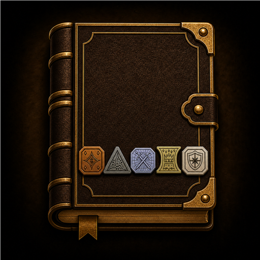
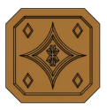
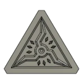
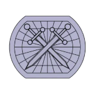

Gestion de monnaie pour JDR sur table
Currency management for tabletop RPGs
En test sur Google PlayTesting on Google PlayPensée pour rester utile avant, pendant et après la partie : plusieurs personnages, monnaies fantasy, coffre commun, dettes, historique local et rapports copiables.
Designed to stay useful before, during and after a session: multiple characters, fantasy currencies, a party chest, debts, local history and copyable reports.
- Plusieurs personnages
- PC, PA, PE, PO et PP
- Partage de récompenses
- Coffre de groupe
- Dettes et règlements partiels
- Historique et annulation
- Rapports copiables
- Accessibilité et thèmes
- Multiple characters
- CP, SP, EP, GP and PP
- Loot splitting
- Party chest
- Debts and partial settlements
- History and undo
- Copyable reports
- Accessibility and themes



